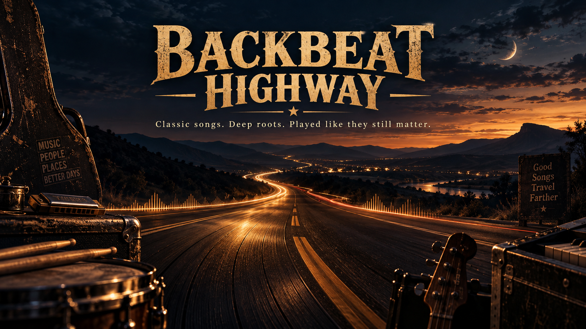
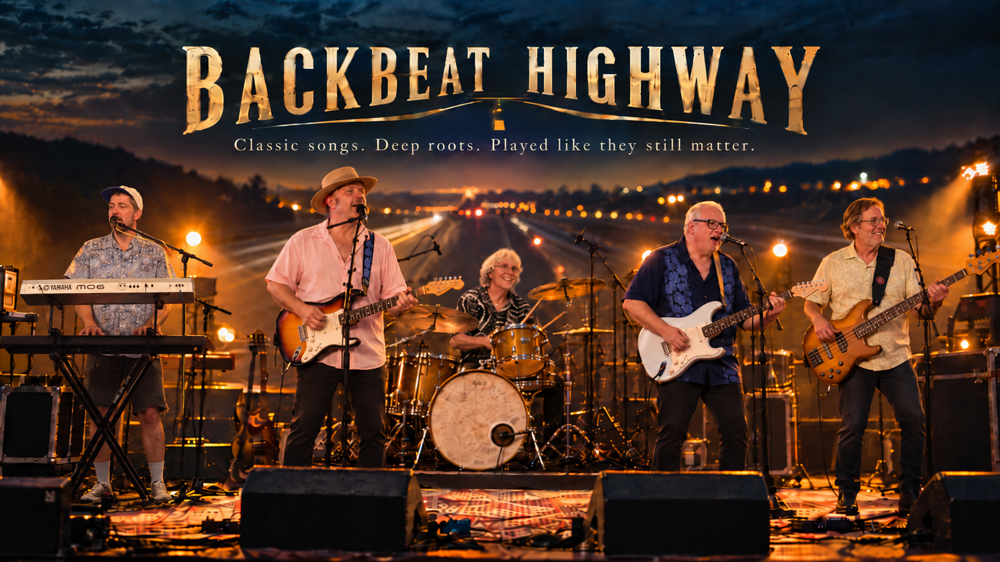
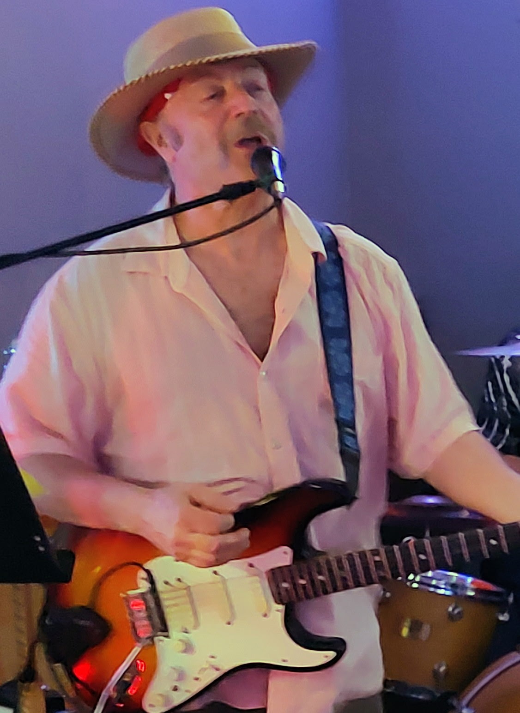
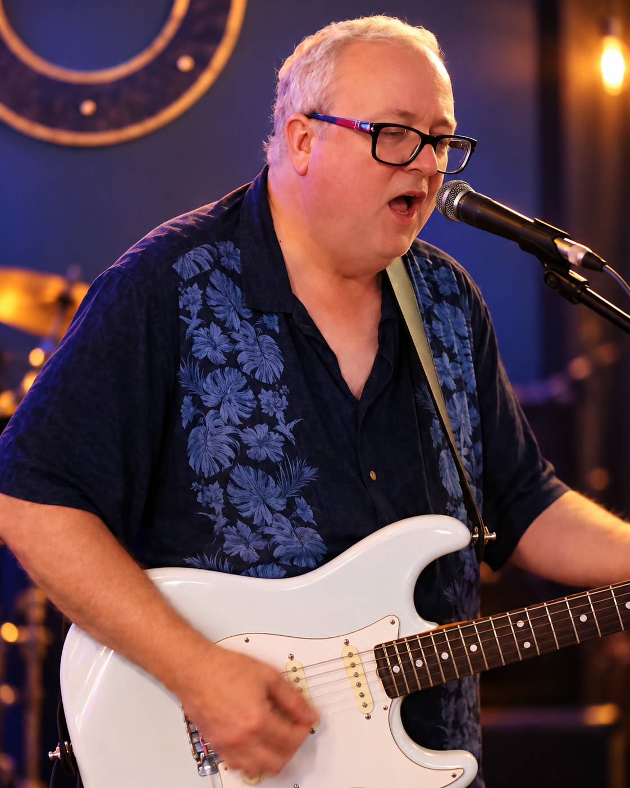
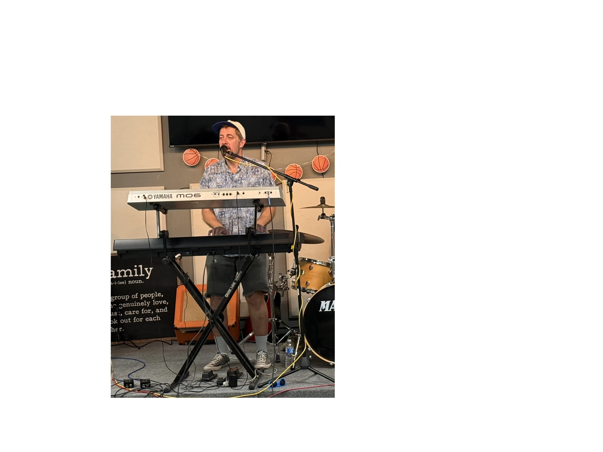
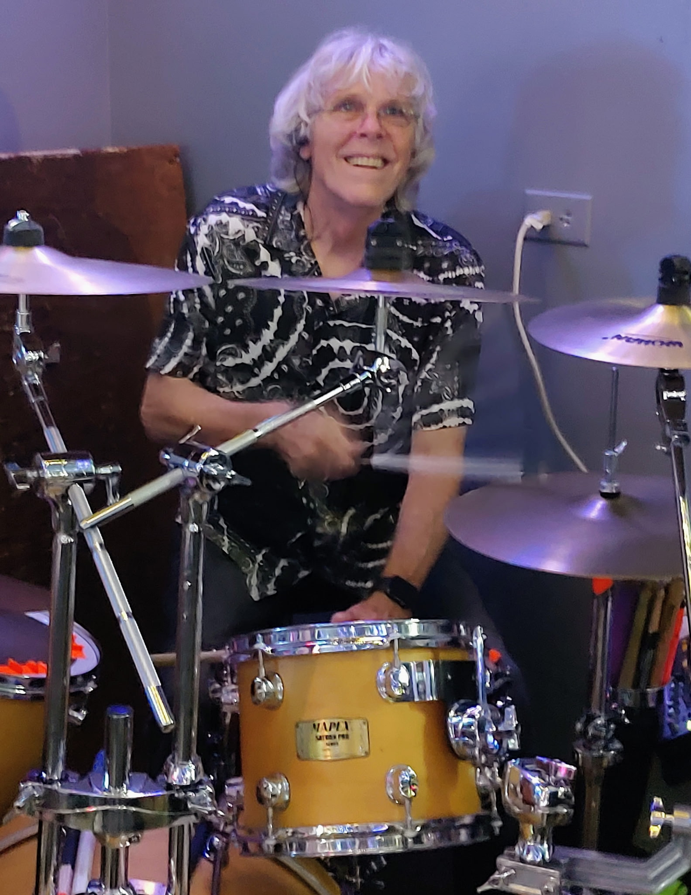
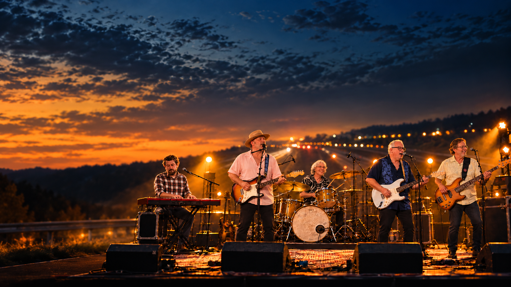

Backbeat Highway — Nashville live band
Nashville, Tennessee
Three lead voices. Five seasoned players. One road-tested groove.
Classic rock, soul, blues, roots, country and the songs that still know how to move a room.
Classic Rock•Soul•Blues•Roots•Country•Americana•70s / 80s•Deep Cuts
The band
A highway through the songs that still move a room.
Backbeat Highway is a Nashville-area five-piece built around songs people already know and love — played by musicians with enough road, studio, songwriting, production and live-performance mileage to make them feel alive again.
The band's musical highway runs through classic rock, soul, blues, roots, country, Southern rock and the sophisticated pop of the 1970s and 1980s. A Backbeat Highway night can move from Van Morrison, Steely Dan and the Eagles to Joe Cocker, Santana, Lynyrd Skynyrd, Chris Stapleton, classic soul, deep blues and a late-set Hendrix moment.
What ties it together is not genre. It is feel: strong vocals, musical dynamics, recognizable hooks, groove and arrangements that respect the songs without turning the show into note-for-note imitation.
“Serve the song. Serve the groove. Read the room. Make familiar music feel good again.”

Seasoned, not nostalgic.
Professional, not sterile.
Musicianly, never self-indulgent.
Classic songs. Deep roots. Played like they still matter.
Meet Backbeat Highway
Five different musical lives. One bandstand.
The strength of Backbeat Highway is not that everyone came from the same place. It's that they didn't.

Lead & backup vocals • Guitar • Slide • Harmonica • Songwriter
Mike Mancour
Detroit-rooted and Nashville-seasoned, Mike is a guitarist, vocalist, songwriter and multi-instrumentalist whose musical story runs from Michigan bands of the late 1970s through decades of Nashville-area rock, blues, country, roots and variety work.
Full bio
His playing blends expressive lead and rhythm guitar, slide, harmonica and a song-first approach shaped by clubs, songwriter circles, road dates and long-running live bands including Hot Ice, Orange Crush, Instigator and BluesSlinger.
Songwriting has remained a parallel thread throughout Mike's musical life. He is also the founder of iDreamMusic, a songwriting and creative-development platform built around helping songwriters strengthen ideas, songs and craft while keeping the human songwriter at the center of the process.

Lead & backup vocals • Bass • Guitar • Producer / Engineer
Chuck Vaughn
Chuck brings Backbeat Highway a rare combination of stage experience and studio ears — bassist, guitarist, vocalist, producer and recording engineer with roots in Florida, Los Angeles and Nashville.
Full bio
Chuck spent much of the 1990s and 2000s in independent bands in Florida and California. In downtown Los Angeles, he owned and operated the independent Panel Room recording studio for seven years, producing and engineering numerous projects while recording his own work under the name Twin Lens Reflex.
After relocating to Nashville following one of Southern California's wildfires, he became active in the blues, roots and Americana scenes. His inventive bass, dependable rhythm guitar, powerful vocals and producer's sense of space and dynamics help shape the band's sound.

Lead & backup vocals • Keyboards • Guitar • Bass • Harmonica
Kyle Moon
Inspired by the Beatles, Kyle picked up a guitar at 13 and never really stopped making music. His influences range from Steely Dan and 1970s soft rock to jazz and classic rock.
Full bio
A multi-instrumentalist on guitar, bass, keyboards and harmonica, Kyle spent more than a decade performing original music with Kentucky-based Atomic Solace and later Nashville's Stratton 13.
After taking time away to raise his family and pursue a career in education, he returned to the stage with Backbeat Highway, where his keyboard work adds harmonic color, texture and a musician's ear for arrangement.
Backup vocals • Bass • Guitar • Keyboards • Flute • Harmonica • Songwriter
Barney Evers
Nashville native Barney Evers is a veteran bassist, guitarist, keyboardist, flutist, harmonica player, songwriter and recording musician with decades inside Nashville's working-music community.
Full bio
Barney studied guitar and string bass in the University of Tennessee jazz program and went on to play bass with Eddie Rabbitt, Johnny Rodriguez and Pam Tillis.
His original recordings have featured an accomplished circle of musicians including Billy Crain, Billy Anderson, Andy Byrd, Mackin P. Davis, Bob Mater, Michael Lind, Bart Rollins and Tim Murphy, along with co-writer Mill Haynes. Barney maintains a catalog of roughly 35 original songs.

Drums • Percussion
Rick Mason
Nashville native Rick Mason is a veteran drummer whose career spans formal percussion study, Southeast road work, Nashville clubs, television, studio recording and years of music ministry.
Full bio
After earning a business degree at UT Knoxville, Rick studied at MTSU on a percussion scholarship, performing in jazz ensemble and symphony settings. His road years included the Holiday Inn and Ramada Inn circuits, college events, festivals, clubs and private engagements.
Rick later spent five years as house-band drummer at Nashville's Cannery, logged roughly 16 years in studio and session work, recorded multiple projects including original Christian albums, and devoted 14 years to performing at the Nashville Rescue Mission Recovery Center.
Representative repertoire
Familiar enough to sing along. Deep enough to keep musicians interested.
Backbeat Highway builds sets for flow rather than genre silos — groove into sing-along, deep cut into Southern-rock lift, soulful vocal into a guitar moment, then back to something everybody in the room knows.
Soul / Groove
- Domino
- Feelin' Alright
- Dock of the Bay
- Ain't Too Proud to Beg
- Gimme Some Lovin'
- Unchain My Heart
Classic Rock / Radio
- Rikki Don't Lose That Number
- Call Me the Breeze
- Working for a Living
- Hurts So Good
- 867-5309 / Jenny
- Breakdown
- Gimme Three Steps
- Take It Easy
Blues / Roots / Southern
- Rack 'Em Up
- Tennessee Whiskey
- Every Time I Roll the Dice
- Black Magic Woman
- Little Wing
- Magnolia
- Rainy Night in Georgia
Deep-Cut Crowd Favorites
- Spooky
- Baby It's You
- Wicked Game
- Mama Told Me Not to Come
- To Love Somebody
- Love Me Two Times
Repertoire evolves constantly. Ask about current set options and special-event requests.

Built for the room
Not just a setlist. A night with shape.
Three lead vocal personalities and a lineup with serious multi-instrumental depth let Backbeat Highway change color without changing identity. The band can lean soulful, open up the guitars, settle into a deep pocket or turn toward roots and Americana without sounding like five different bands.
Familiar songs without the same-old cover-band feel.
Media
The road, the room, the players.
A mix of real performance photos and Backbeat Highway promotional imagery created from the band's own member references.
Where we fit
A professional band with a crowd-friendly songbook.
Clubs & listening rooms
Enough depth for music people, enough familiarity for everybody else.
Festivals & community events
Recognizable songs, broad appeal and a set that can scale to the occasion.
Private & corporate events
Professional, flexible and mature — without becoming background music.
Special events
Tell us the room, the crowd and the goal. We build the night around it.
Book Backbeat Highway
Bring the highway to your room.
Looking for familiar songs without the same-old cover-band feel? Backbeat Highway is available for Nashville-area clubs, festivals, private events, community events, corporate gatherings and other engagements where strong musicianship and a crowd-friendly repertoire matter.
- Three lead vocalists
- Deep, flexible repertoire
- Touring, studio, songwriting, TV and production experience
- Professional, audience-aware performance